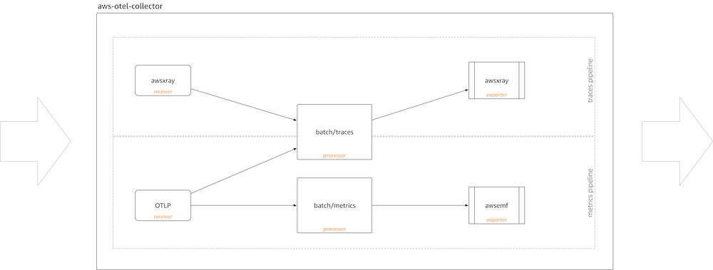

Using AWS Distro for OpenTelemetry in EKS on Fargate with AWS X-Ray¶
In this recipe we show you how to instrument a sample Go application and use AWS Distro for OpenTelemetry (ADOT) to ingest traces into AWS X-Ray and visualize the traces in Amazon Managed Grafana.
We will be setting up an Amazon Elastic Kubernetes Service (EKS) on AWS Fargate cluster and use an Amazon Elastic Container Registry (ECR) repository to demonstrate a complete scenario.
Note
This guide will take approximately 1 hour to complete.
Infrastructure¶
In the following section we will be setting up the infrastructure for this recipe.
Architecture¶
The ADOT pipeline enables us to use the ADOT Collector to collect traces from an instrumented app and ingest them into X-Ray:

Prerequisites¶
- The AWS CLI is installed and configured in your environment.
- You need to install the eksctl command in your environment.
- You need to install kubectl in your environment.
- You have Docker installed into your environment.
- You have the aws-observability/aws-o11y-recipes repo cloned into your local environment.
Create EKS on Fargate cluster¶
Our demo application is a Kubernetes app that we will run in an EKS on Fargate cluster. So, first create an EKS cluster using the provided cluster_config.yaml.
Create your cluster using the following command:
Create ECR repository¶
In order to deploy our application to EKS we need a container repository. We will use the private ECR registry, but you can also use ECR Public, if you want to share the container image.
First, set the environment variables, such as shown here (substitute for your region):
export REGION="eu-west-1"
export ACCOUNTID=`aws sts get-caller-identity --query Account --output text`
You can use the following command to create a new ECR repository in your account:
aws ecr create-repository \
--repository-name ho11y \
--image-scanning-configuration scanOnPush=true \
--region $REGION
Set up ADOT Collector¶
Download adot-collector-fargate.yaml and edit this YAML doc with the parameters described in the next steps.
Set up Managed Grafana¶
Set up a new workspace using the Amazon Managed Grafana Getting Started guide and add X-Ray as a data source.
Signal generator¶
We will be using ho11y, a synthetic signal generator available
via the sandbox
of the recipes repository. So, if you haven't cloned the repo into your local
environment, do now:
Build container image¶
Make sure that your ACCOUNTID and REGION environment variables are set,
for example:
export REGION="eu-west-1"
export ACCOUNTID=`aws sts get-caller-identity --query Account --output text`
ho11y container image, first change into the ./sandbox/ho11y/
directory and build the container image :
Note
The following build step assumes that the Docker daemon or an equivalent OCI image build tool is running.
Push container image¶
Next, you can push the container image to the ECR repo you created earlier on. For that, first log in to the default ECR registry:
aws ecr get-login-password --region $REGION | \
docker login --username AWS --password-stdin \
"$ACCOUNTID.dkr.ecr.$REGION.amazonaws.com"
And finally, push the container image to the ECR repository you created, above:
Deploy signal generator¶
Edit x-ray-sample-app.yaml
to contain your ECR image path. That is, replace ACCOUNTID and REGION in the
file with your own values (overall, in three locations):
# change the following to your container image:
image: "ACCOUNTID.dkr.ecr.REGION.amazonaws.com/ho11y:latest"
Now you can deploy the sample app to your cluster using:
End-to-end¶
Now that you have the infrastructure and the application in place, we will
test out the setup, sending traces from ho11y running in EKS to X-Ray and
visualize it in AMG.
Verify pipeline¶
To verify if the ADOT collector is ingesting traces from ho11y, we make
one of the services available locally and invoke it.
First, let's forward traffic as so:
With above command, the frontend microservice (a ho11y instance configured
to talk to two other ho11y instances) is available in your local environment
and you can invoke it as follows (triggering the creation of traces):
Tip
If you want to automate the invocation, you can wrap the curl call into
a while true loop.
To verify our setup, visit the X-Ray view in CloudWatch where you should see something like shown below:
Now that we have the signal generator set up and active and the OpenTelemetry pipeline set up, let's see how to consume the traces in Grafana.
Grafana dashboard¶
You can import an example dashboard, available via x-ray-sample-dashboard.json that looks as follows:
Further, when you click on any of the traces in the lower downstreams panel,
you can dive into it and view it in the "Explore" tab like so:
From here, you can use the following guides to create your own dashboard in Amazon Managed Grafana:
That's it, congratulations you've learned how to use ADOT in EKS on Fargate to ingest traces.
Cleanup¶
First remove the Kubernetes resources and destroy the EKS cluster:
Finally, remove the Amazon Managed Grafana workspace by removing it via the AWS console.